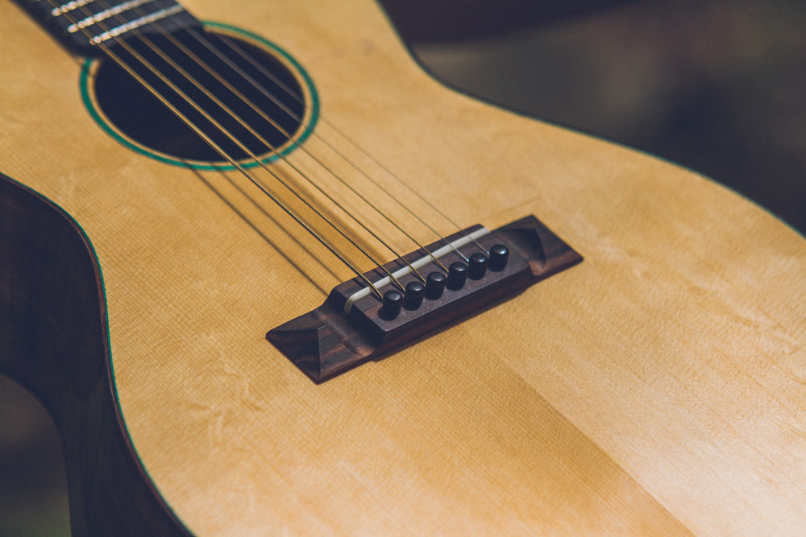
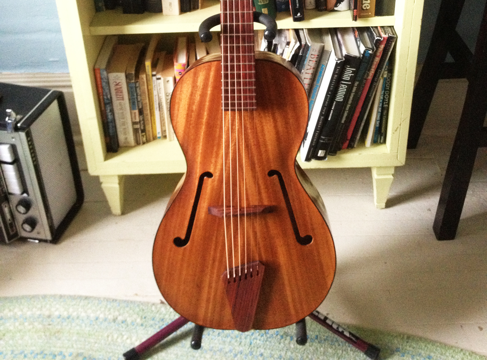
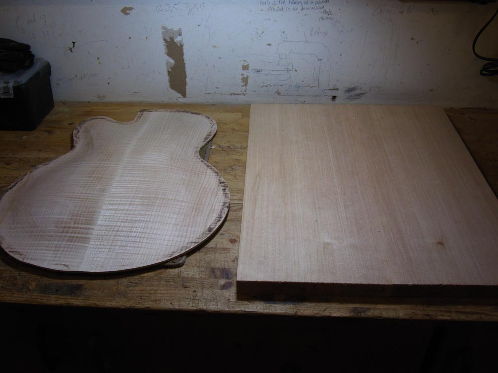
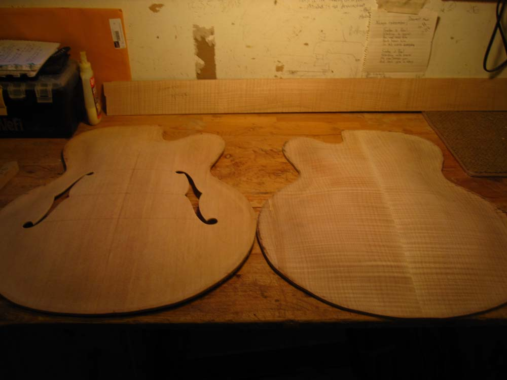
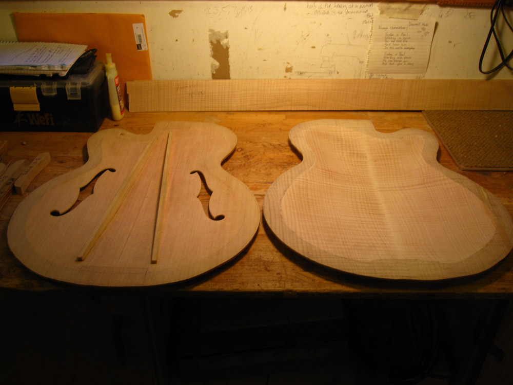
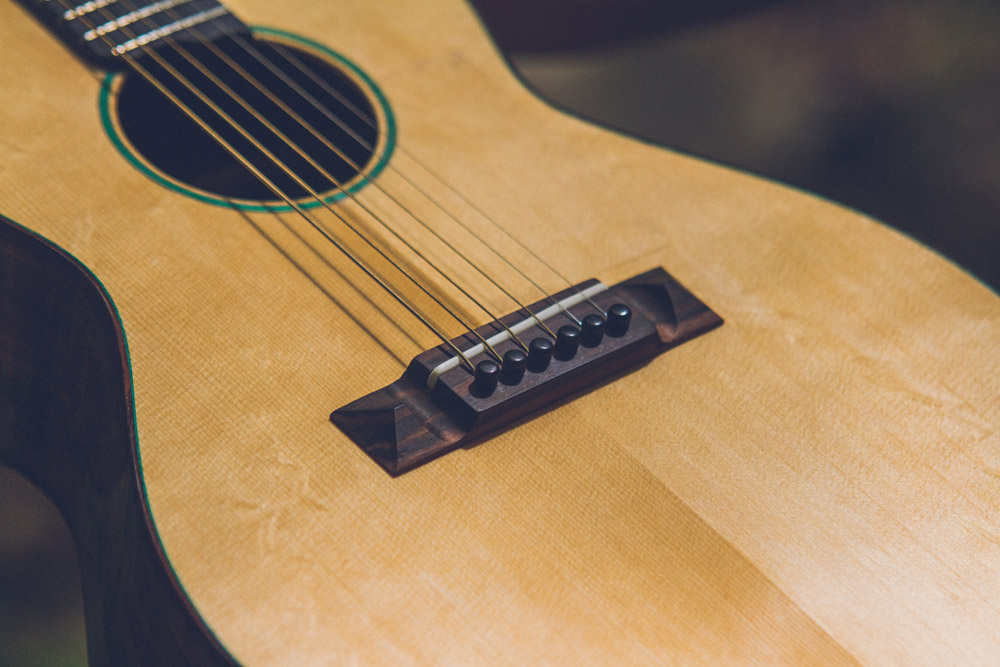
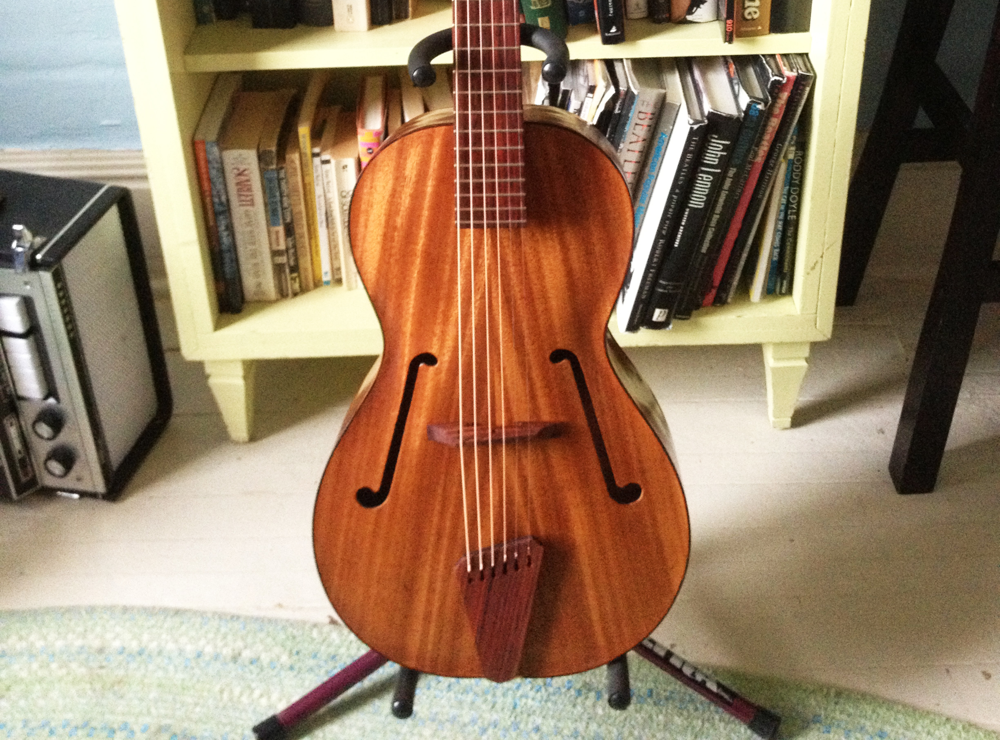
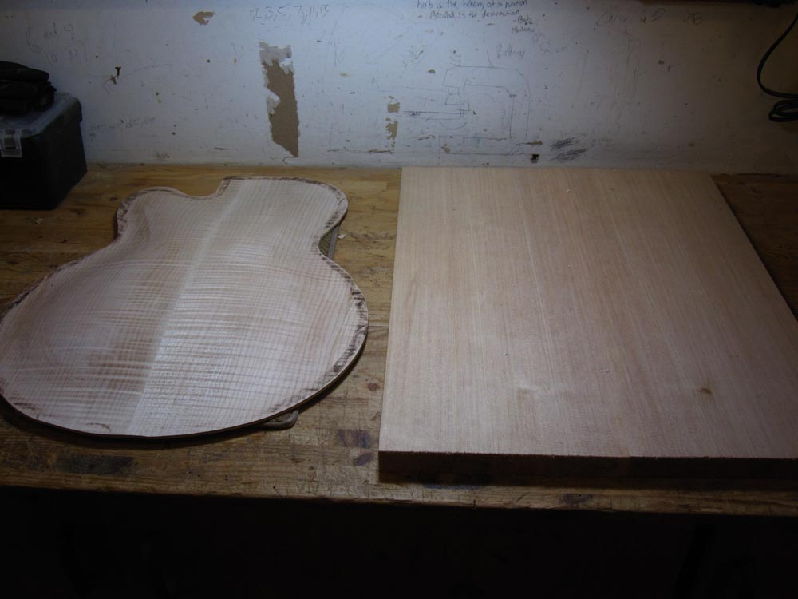
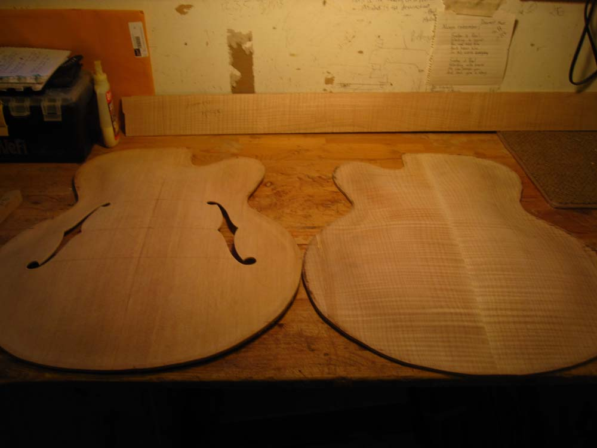
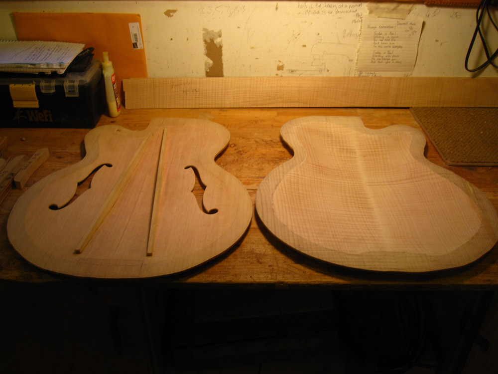

In order to minimize environmental impact, all instruments can be built completely out of sustainably sourced wood, non-chemical glues and finishes. Forestry Stewardship Council (FSC) approved materials are readily available from my suppliers, so please ask for them. I've also managed to use rosewoods, ebony, mahogany & other exotics from solid wood furniture, so ask about that too. This method of acquiring material is especially effective when the furniture is damaged and doesn't serve its purpose anymore. The fingerboards I’m using right now came from a solid ebony table my friend found on the side of the road!
Antique stores & markets are some of the best wood suppliers I know, as long as you aren’t fooled by veneer (which, if thick enough, could be re-used). Perhaps I could recycle a worn out, treasured piece already in your collection?
*White Spruce is an Eastern Ontario alternative to Englemann Spruce from B.C. It’s also a relative species of European White Spruce, which is prized amongst tonewoods.
**Most guitar makers can't avoid using rosewoods if they'd like to remain in business, so my choice is Indian Rosewood. What I prefer about this type of rosewood is the method in which it is harvested, and the fact that it is nowhere near extinction. In fact, it is constantly being replanted to shade the acres of coffee plantations all over India. Although the demand for this wood is high, it's a relatively quick growing tree, only needing 20 to 30 years time before reaching an appropriate size suitable for musical instruments. No one can deny its musicality, as many rank it as the most suitable alternative to Brazilian Rosewood.
What inspired me to study as an apprentice luthier at Summit School of Guitar Building and Repair was the lack of skilled instrument repair persons in Northern Ontario. I wondered how many people, like me, had lamented the perpetual state of disrepair their vintage Martins were in, and how long they would remain that way? What can I say? I entered this profession for self-serving purposes.
It wasn't until I built my first guitar that I realized how much room for improvement there was for guitar functionality. Each time I build, there is the inevitable trial of trying to make a better sounding instrument. This is what drives me to improve my process, my selection of material, and experiments in maximizing tone. All this to consider while staying true to traditional building principles.


 








